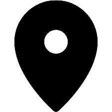

Bachelor of Science in Artificial Intelligence
2023-2027(Expected)
COMSATS University Islamabad, Lahore Campus
CGPA : 3.65/4.00
A driven and detail-oriented individual with experience in technology and problem-solving. Proficient in AI, including machine learning and deep learning, with a strong interest in utilizing these skills to enhance automation and decision-making.
 Lahore, Pakistan
2023-2027(Expected)
COMSATS University Islamabad, Lahore Campus
CGPA : 3.65/4.00
2020-2022
Queen Mary College, Lahore
2018-2020
The Trust School, Lahore
XgBoost, Random Forest , Lightgbm, SVM
Developed a model to detect fraudulent credit card transactions using machine learning algorithms. Achieved high accuracy by employing optimization techniques like Grid Search, Random Search
Sciket-learn, Pytorch, Tensorflow
Developed ANN models for regression on the California Housing dataset and classification on the MNIST dataset. Built a CNN model for image classification on the CIFAR-10 dataset.
SQL, Database System
Developed a system to manage influencer profiles, track engagement metrics, and analyze brand partnerships for strategic collaborations.
Introduction to Java and Object Oriented Programming
View CredentialsC++ Basics: Selection and Iteration
View Credentials